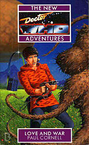

|
Love and War
|
BASIC PLOT The Hoothi are coming to Heaven, and the Doctor is going to stop them. He has a plan which, unfortunately, he's turning cartwheels to avoid putting into action. But sometimes tragedy is unavoidable. Jan and the travellers, the IMC taskforce, Humans and Draconians, Ace and Professor Bernice Summerfield. The Doctor will open up the mincing machine of war, and beckon them all in... DOCTOR COMPANIONS And introducing Professor Bernice Summerfield (see below) MATERIALISATION CIRCUIT Pg 13 On Heaven, in a muddy market square. Before Pg 87, the TARDIS materializes at the Travellers' camp. Pg 144 The TARDIS has arrived at the Church of the Vacuum. Pg 149 At Benny's dig-site. Pg 181 Inside the Hoothi sphere. Pg 196 The TARDIS appears briefly back at the dig-site and then dematerializes again. Pg 200 By Operative Miller's desk, at his headquarters. Pg 207 Amongst the ruins of the Church of the Vacuum. Pg 218 The Doctor dematerializes at this point, spends some time wandering the Vortex (why are none of the Seventh Doctor's solo adventures considered to happen here, I wonder?) and is back by Pg 229 Pg 234 Earth, near Scrane End, England, around the time when Ace was 15 (1985?). PREPARATORY READING CONTINUITY REFERENCES Pg 3 "Recent experiences had taught her about the pain of nostalgia." Nightshade. Pgs 3-4 "They walked up Horsenden Hill, talking about the Christmas cards that Chad Boyle had suddenly sent everybody last year, after years of silence, and about poor dead Midge and poor dead Julian. Shreela had actually called Chad up and got a job on his newspaper, doing odd jobs in the office, learning the trade." Horsenden Hill was a location in Survival, Chad Boyle's sudden re-emergence is to do with his experiences and appearance in Timewyrm: Revelation, and Midge died in Survival. Shreela's new career presages her previous appearance in Cat's Cradle: Warhead, in which she is a journalist. Pg 4 "After all, the time storm that pulled her away from Earth had left things in a mess." Dragonfire. (Although it's not clear how Ace knows what the room looked like after she'd gone.) "She'd asked the gang not to mention that they'd met her recently." Survival "Besides, in Ace's life, there was something that worked against sadness every time." This refers to the Doctor. Readers of the previous novel, Nightshade, found this odd, as the end of that Ace was furious with the Doctor for taking her away from her new-found beau, Robin Yeadon. However, later comments in this book make it clear that Love and War is some months after Nightshade, and indeed, some Who timelines put both Independence Day and Atom Bomb Blues into this gap. Pgs 4-5 "The TARDIS, the Doctor's multidimensional police-box craft, had been behaving erratically lately." This refers to the infection that's been there since the Cat's Cradle trilogy, which is eventually sorted out in Deceit. Pg 5 "Another big game hunt, another war against the monsters. Hadn't that attitude got him into enough trouble already?" Variously, Ghost Light, The Curse of Fenric, Cat's Cradle: Warhead and a whole load of others just waiting to happen. "'No monsters to finish off?' 'All the dragons are dead. Little Jimmy Piper isn't pleased.'" The 'all the dragons are dead' line recurs in The Shadows of Avalon, although in the Brigadier's thoughts. Jimmy Piper is a reference to the boy in the song Puff, the Magic Dragon, although it should be Jackie Paper. Jimmy's name changes later in this book, so I think this must be a plot point, although I can't fathom why. Pg 6 "Here be Daleks..." Pretty obvious reference. "The War was still blazing away in other quadrants." This is the Dalek war which started in the aftermath of Frontier in Space. "Rumours persisted that during the battle of Alpha Centauri, when a small squadron of Silurian - Brewer checked herself, they liked to be called Earth Reptiles now - vessels had seen off the main Dalek force, a whole fleet of the tin monsters had vanished into hyperspace." Alpha Centuari had a delegate in The Curse of Peladon, The Monster of Peladon and Legacy. The Silurians appeared in Doctor Who and the Silurians, The Scales of Injustice, Warriors of the Deep, Blood Heat and Eternity Weeps. This is the first mention of their more politically correct NA description as Earth Reptiles, although The Also People suggests Indigenous Terrans. The vanishing of a Dalek fleet into hyperspace may be them going to the Time War as the new series postulates, or may be something completely different. "'May I point out that at this range we are in danger of Sontaran interest.' 'Nonsense, Kate! They're busy in the Magellanic Cloud.'" Sontarans from The Time Warrior et al. The planet Ribos was three light centuries from the Magellanic Cloud. Peoples of the Magellanic area were also mentioned in Companion Piece. Pg 10 "He thought of calling the place [Heaven] Senacharib, except that would have been a private joke." It's a biblical reference, not a Who one. "The Ambassador was old Ishkavaarr, the Great Peacemaker." Draconians were not named in Frontier in Space, but it's possible that he appeared there. Pg 11 "It was night, the TARDIS was travelling towards its new destination, and the low lighting of the walls would occasionally give way to patches of darkness." The TARDIS does have a 'night' setting, but this also may be a reference to the darkened TARDIS of Battlefield. Pg 12 "He'd once told her that the First Law of Time was a moral law as well as a legal one. The Doctor broke it all the time, of course, stage-managing his battles with monsters." Much is made of the term 'monsters' in this book, that thing which the Doctor beats on a regular basis. The First Law of time has been hanging around since The Three Doctors. The stage-managing of battles was at its most startlingly obvious in Timewyrm: Revelation. Pg 14 Another reference to Daleks. Pg 16 "She glanced down, and found herself looking at the most beautiful man she'd seen this side of Kirith." Timewyrm: Apocalypse. Pg 18 "Ace didn't argue. 'Know any Johnny Chess?'" Johnny Chess is the son of Ian and Barbara Chesterton who, fandom has it, also married Tegan Jovanka. This latter has never been confirmed in the books, but the closest implication you're likely to find is in The King of Terror. He also appears, briefly, in Byzantium! Pg 20 "Who do you really work for? IMC? The Spinward Corporation? The BBC? Can you remember?" IMC are from Colony in Space. The Spinward Corporation is from Deceit (and originated from the Butler Institute of Cat's Cradle: Warhead, see also Another Girl, Another Planet). The BBC broadcast a well-known television show between 1963 and 1989, and have recently revived it. Their third channel appeared in The Daemons (and now shows re-runs of said popular programme). "You can't shoot me, you can't arrest me. You're hollow. Run away." This is like the famous sequence in The Happiness Patrol only much quicker. Pg 22 "I'm more interested in a book. It's called The Papers of Felsecar , an ancient text of Felsecar Abbey. They're a little worried about it on Felsecar." The Abbey of Felsecar is mentioned in Cornell's audio Seasons of Fear, although it appears to be a place on Earth in that appearance. Pg 23 The character Phaedrus may well have been named for a character in the iconic tome Zen and the art of Motorcycle Maintenance. Pg 26 "If he died, he'd just regenerate, and although he sometimes let things slip about a family, he never seemed to fancy anybody." Ace remembers a birthday card from Susan in Cat's Cradle: Time's Crucible. The Doctor himself mentions his family in Tomb of the Cybermen. Pg 27 Another reference to Midge, from Survival. "It had pulled her through a wall and thrown her out across the disc of the Milky Way. She'd watched the disc spin, stars flashing past, until suddenly she was lying on the floor of Sabalom Glitz's spaceship in the Iceworld dockyards." Dragonfire. "Okay, so she'd taken what warmth she could find on that planet, and it was painful and tawdry and sodding meaningless." Dragonfire proved that Svartos was an ice-world. Happy Endings makes it clear that Ace lost her virginity to Glitz (first suggested in the Dragonfire novelisation). Pg 32 "'And you're under arrest, you cocky bastard!' 'I should write a book on that subject,' the Doctor grinned." Getting himself arrested was also part of the plan in The Happiness Patrol. Pg 33 Ace: "She'd learned to ride in Adelaide in 1967, trained by a man called Medge." An unrecorded adventure. "It has been months since Robin Yeadon, months and years and centuries. But Robin Yeadon had been good, and very ordinary, and had taught her that nostalgia was worse than death." Nightshade. This makes clear that a large amount of time had passed between the previous book and this one. Pg 36 "He called you Karshtakavaar, the oncoming storm." This may be the first reference to this cognomen in the New Adventures. Pg 37 Reference to Ace's real name being Dorothy, as revealed in Dragonfire. Pg 38 "'Who do you worship?' 'The Goddess and her followers.'" The Goddess became something of a fixture in the New Adventures and beyond, and is frequently a 'swear-word' that Benny uses even to this day. Pg 39 "When Earth ships finally met the Arcturans, the Earth ambassador was told that they'd met humans before. Fox and his crew had landed on Arcturus Six and busked for their supper!" We met an Arcturan in The Curse of Peladon. The reference to Fox is, I think, an invention of this book. "Jan threw his head back and laughed, and Ace saw that he was tattooed, a snake eating its own tail." The snake is the mythological Worm Ouroborous, is possibly symbolic here and is definitely an episode of Red Dwarf (one of the better ones). Pg 42 Reference to Perivale (Survival) and to the fact that the Daleks have time travel technology (The Chase et al). Pg 46 Another mention of Arcturus as well as one of Rigel. There is mention of Rigel in The audio story, Shadow of the Scourge, and the Doctor and Peri visit it in Players. Pgs 46-47 "'Just reading about Daak. The story so far...' 'Daak's dead.'" The reports of Abslom Daak, Dalek Killer's death, are an exaggeration. We see him (sort of) three years later, relative time, in Deceit. Pg 47 Reference to the term DK, created in the Who comic strips, which stands for Dalek Killer. Pg 49 "'No, no, wait a moment. Who did find this?' A young man with a floppy centre parting stepped forward, looking abashed. 'Paul Magrs, boss...' he said." To this day I cannot work out whether this is meant to be the real Paul Magrs, who wrote The Scarlet Empress, The Blue Angel, Verdigris and Mad Dogs and Englishmen, or whether the author of those books has a real name which is not Paul Magrs, and he took this as his pseudonym. Pg 50 "So, Ace, when did you start thinking of yourself as a citizen of the universe?" The Doctor considers himself to be one, as he clearly stated in The Dalek Masterplan. The reference to Terry is presumably to Terry Wogan, BBC interviewer of the 1980s. Pg 52 "I planted some bombs in support of those imprisoned on the lunar penal colony." The Doctor was imprisoned in this place in Frontier in Space (which means that it's possible Maire planted bombs in indirect support of him!) Pg 56 "And not enough was done, no love and no reconciliations and no final, final word about Mum or Glitz or the Doctor or Robin or -" The Curse of Fenric, Dragonfire, Nightshade. "Let's see... Dorothy. Warrior chemist, Dalek killer, she who loved not wisely but well." Ace's real name from Dragonfire, followed by a general description of Ace to this point (think Battlefield), and then what she's about to become (between now and Deceit). The final line refers to Jan and this very novel. Pg 64 "What would the Doctor do? The Doctor would win." This prefigures, by some years, the tagline of The Gallifrey Chronicles. Pg 69 "Yes, so am I. Perigosto Stick..." The Doctor mentions an obscure but apparently hilarious anecdote about such a device in The Green Death. Here, he just uses it to open a door. "The Doctor produced a small cube from his pocket, and Bernice was suddenly very interested." This, which the Doctor refers to as a Tesseract, is probably the same thing he used to contact the Time Lords in The War Games, as it appears to carry his memories and is able to dematerialize and rematerialize at his behest. We see it again in Deceit (pg 42) and something similar in Tears of the Oracle. Pg 70 "It's a game played by Time Lords. Manoeuvering an object across the dimensions." Similar to something that we see the Doctor do in The Ambassadors of Death. Mention of the Prydonians, the Doctor's sect of the Gallifreyan hierarchy. "'What's the best Isley Brother's song?' '"This Old Heart of Mine"' Benny nodded solemnly. 'Correct'" The Isley Brothers appear in Happy Endings, although the song that is important in that story is Summer Breeze. "'What's the time?' 'The relative measurement of states of decay,' muttered the Doctor. 'But that's not important now.'" A possible reference to State of Decay. The line 'that's not important now', and the appearance of an unwanted and irrelevant definition, refers to practically every film and TV programme with Leslie Nielsen in it, particularly The Naked Gun and Airplane. Pg 75 "'Where do you come from?' he asked Bernice. 'Originally?' Benny shouted over the sound of the hooves. 'Beta Caprisis. Earth colony.'" A fact that was missed by subsequent authors (notably David McIntee), but eventually set right. Benny eventually returns there in The Mary-Sue Extrusion. See also Introducing Professor Bernice Summerfield. "'My Dad was a bigwig with Spacefleet. Mum stayed at home with me, until I was seven.' 'What happened then?' 'Oh, the Daleks did. When the war broke out, we were suddenly tactically important. Dad was at the front, of course, but they broke through. Mum grabbed me and my doll Rebecca, and ran for one of the shelters. She, ah, well, she dropped Rebecca, and shoved me through the door. It shut after me, but Mum could have opened it again. Only she'd run back down the street for Rebecca. Silly thing. The Daleks started bombarding the city with plasma beams. Mum was caught in the first blast.' The Doctor closed his eyes. 'I'm very sorry.'" The War came after Frontier in Space. We'll see Benny's mum go after the doll (with a name change) in Parasite. 'No, no. Long time ago now. Not very important. Loads of people lost family. Dad never came back. He vanished after a scrap with the Daleks. Bunch of idiots said he'd run away, but that's totally impossible, you see. Dad wasn't like that at all.'" We find out the truth in Return of the Living Dad. Pg 77 "She told him about her life, about faraway Perivale. Jan believed every word, because he believed in magic. 'I want to come too,' he chuckled. 'Take me away in your TARDIS and we'll go duff up some clowns!'" Ace has been telling Jan about life before Dragonfire (and possibly Survival) as well as The Greatest Show in the Galaxy. Pg 80 Ace's dream: "Dark it was, like the hidden face of the moon." Where Ace 'died' during Timewyrm: Revelation. "Or the womb that the Doctor had twice left." A reference to him being born once as the Other and once again when he was loomed in the house of Lungbarrow (the image of which appears in Human Nature). Nowadays, we can also see this as the dichotomy between the Doctor of the NAs, created, and the Doctor of the 8DAs, born of Penelope and Ulysees. Death and Time appear, the Eternals, from numerous NAs. "'Last time we met, we danced,' he began." Timewyrm: Revelation. "'I gave you my sixth life for wisdom -' Death laughed, and raised a soft finger between the Doctor's eyes. 'Don't lie to me! You sacrificed the colourful jester because you needed to be born! Time would have her champion and he was just the compost for your blooming. You ran you TARDIS into the Rani's beam joyfully. Hah! Your sixth self hates you for that, he will become Valeyard for that -' 'Yes. I know. Now I offer myself.'" Loads of references. Thus begins the NA-long concept of Time's Champion, although rumours began (retrospectively) in Millennial Rites. The Rani's beam appeared in Time and the Rani. The Valeyard is from The Trial of a Time Lord. The concept that the seventh Doctor deliberately killed the sixth is examined throughout the NAs, most particularly in Head Games, and is eventually resolved in The Room With No Doors. This may be contradicted by Spiral Scratch. "Take me with you. Replace me with someone who doesn't know his legacy." Of course, after The Ancestor Cell, that was exactly what happened. "Who would never trouble the Eternals." The Eighth Doctor, to the best of my knowledge, never meets them. Pg 81 "I cannot take your life, Doctor. Have you another one to offer me, instead? Do you have a plan?" Death eventually gets her life, the life of Doctor John Smith, in Human Nature. Pg 85 On the TARDIS translation devices: "No. I can only understand speech. Words on paper don't have minds that you can read." This explains much (Benny's need for subtitles on television in The Left-Handed Hummingbird, for example) but I cannot conclusively say that we have never seen the Doctor read something in a language that he shouldn't understand. And it also contradicts The War Games, where he didn't understand German. Pg 87 Mention of Sontarans. Pg 92 "Every now and then, his body mumbled worried words about one last try, about doing things the right way, the old way." A reference to the changed character of the Doctor in the NAs "Every now and then, that body forgot who it was in its dreams, and called those watching Dodo, or Susan, or Rassilon." The plot makes it clear that, in order to hide his plan from the Hoothi, the Doctor mentally retreats to his first persona. Hence mentions of Dodo (The Massacre-The War Machines, Who Killed Kennedy), Susan (Frayed-The Dalek Invasion of Earth, plus The Five Doctors and Legacy of the Daleks) and Rassilon (another reference to the Doctor as the Other). Pg 93 "I have battled in the Matrix of Gallifrey!" The Deadly Assassin. Pg 95 "Alone. Wandering in the vortex. Dying. The Doctor was lying in the corner of the TARDIS, the radiation from the Great One's cave ravaging his body. It had taken years... ten years of slow decomposition." This is a typically Cornellian retcon, adding ten years to Planet of the Spiders. (And sometimes, it should be said, Planet of the Spiders feels like it takes that long to watch.) "The hand was his own... his seventh hand. It wavered in his failing vision, and for a moment it had the ruffled cuff of his third incarnation." This not dissimilar to the moment in The Power of the Daleks when the second Doctor saw the face of his previous incarnation in a mirror. "A mindscan was covertly taken of you at your second trial" The Trial of a Time Lord. Pg 96 "The Doctor shivered, gathering his strength. 'I will never surrender to you!' he spat. 'You are an abomination.'" I mention this line only because it's so well-written that you can actually hear McCoy bellowing it in his own inimitable fashion. Pg 97 "If the doors opened in flight, the emergency system would cut in. If that happened, then if he could somehow hold on as the air exploded out into the vortex, the ship would make an emergency landing." Something similar happened in The Enemy of the World. See also Continuity Cock-Ups. Reference to Johnny Piper again, who was Jimmy earlier, and still should be Jackie Paper. He'll be Johnny Piper again in Human Nature. I wish I understood why this keeps changing. I'm sure it's a subtle point that I'm missing. Pg 98 "Why do we always get into this stuff?" queries Ace, referring to Virtual Reality Environments. The obvious answer is that, as the early NAs were being written, it was a new, hip and cool idea. Consequently, it kept happening. Pg 100 "'Grandma was really cool.' 'You never met her.' 'I did.'" Indeed, in The Curse of Fenric. Pgs 100-101 "'There's a war to be won. Alien monsters to fight.' 'Are they worse than the ones here, then?' 'No.' The Doctor pulled her close and held her in his weakened arms. 'No, they never are.'" The worst monsters are back at home, as we eventually find out is true even for the Doctor, in Lungbarrow. Pg 102 Another reference to Midge, from Survival. Pg 104 "Nothing is ever forgotten" was the tagline from Robin of Sherwood. Pg 105 "'How are you then, Merlin?' the Trickster asked the Doctor. The Doctor will become Merlin, as we discover in Battlefield. Pg 110 Mention of Daleks, again. Pg 113 Ace opens a lock with a hairpin: "'Ever had a companion with short hair?' 'No. It's part of the job description.'" The Doctor is clearly being facetious, as I could mention any number of short-haired companions, most notably Turlough. Pg 120 "The cells contain something like the symbiotic nuclei that enable Time Lords to regenerate." These were mentioned in The Two Doctors, although that was not their function in that story. However in both Goth Opera and Divided Loyalties, they are also tied to regenerative function as well as TARDIS travel. Pg 121 "The Doctor began to talk about his friendship with Christopher Marlowe." The Empire of Glass. "My granddaughter did, a long time ago. She'd fallen in love. With an Earthman." The Dalek Invasion of Earth. Pg 122 "I was alone. Wandering in the vortex. Dying. It was terrible. I don't want to be... I don't want to be alone." Planet of the Spiders. This may also explain the Doctor's sympathy for the dog, Laika, in Alien Bodies. Pg 123 "He glanced at a dirty post-it note that was firmly stuck in the book. 'Oh dear, one of mine.'" This is the Doctor doing his Time's Champion bit again. Pg 124 "Recipes from Rigel, a palimpsest of poems, notes on Dalek design down the decades." Various alliterative references. "Here we are. Written in Draconian on the top of the page. In felt-tip. I'd never do that, this must have been done by a very crude future incarnation." One hazards to speculate which it might have been. It may also be a reference to City of Death and the 'forged' Mona Lisa with felt tip underneath it. Pg 126 "'Well,' Ace took a deep breath. 'I was working as a waitress in a cocktail bar...'" Dragonfire (but also a famous line from the Human League song). Pg 127 The character Paul Magrs: "I was born to deconstruct." As it turns out, he was. (See Verdigris particularly, amongst others.) Pg 137 "'So,' she asked. 'Do you have a girlfriend?' 'No.' Boyfriend?' 'No.' 'Model railway set?' 'Somewhere.'" Indeed he does. You can read all about it in 'Model Train Set' in the first Short Trips anthology. "I'm what the monsters have nightmares about." This became something of a tagline for the Seventh Doctor, used in a variety of places, but at its best in 'Continuity Errors' in Decalog 3. Pg 141 "'When you said last night that the mixed metaphor in Hamlet was deliberate, was that a critical opinion, or first-hand knowledge? ' 'I was there when Will composed it,' the Doctor snapped.'" As we found out in City of Death. Pg 144 "'What should I do?' she whispered. 'Who will save us now?' A hand reached out and took the receiver. The Doctor glared at the Traveller, his eyes full of steel. 'I will,' he growled." The phrase 'Who will save them now?' dates back (I think) to The Caves of Androzani and resounds throughout many of the New Adventures. It's probably at it's most magnificent in the opening to Death Comes to Time. Pg 145 "The Doctor was crooning into a stand-up microphone, speakers in the TARDIS throwing his voice into the massed choir. 'But when she gets weary, try a little tenderness...' Benny leaned over the mike, hollering the lyrics of the chorus in a voice with more soul than training." The Doctor and Benny are singing Andrew Strong's song 'Try a Little Tenderness' (most famous for its appearance in the soundtrack of The Commitments) in a scene reminiscent of one from The Happiness Patrol. Benny would later go on to refine her singing in No Future. Pg 148 The Doctor keeps referring to Ace as Dodo: "'Who's Dodo?' 'My young companion.' The Doctor walked slowly around the console, flicking switches randomly. 'She talks using hip phrases, she comes from London, she's fashionable. She reminds me of my granddaughter.'" Dodo (The Massacre to The Ark) and, although I can't back this up, I suspect this to be the complete character description that John Wiles and Gerry Davis came up with. A harsher person than I might suggest that her character was never actually developed any further than these basic phrases. "Oh God, was he going to become a monster?" Some might suggest that he already had, but Benny's going to have to wait until The Left-Handed Hummingbird for it to literally, rather than figuratively, happen. Pg 150 "'The slaughter was huge. The Hoothi took all the dead into their silent gas dirigibles, and used them as they do all dead matter.' 'Silent gas dirigibles?'" 'The Hoothi in their silent gas dirigibles,' was the original brief description of them when mentioned in The Brain of Morbius. It remains a strange description as gas is pretty much always silent and no one in their right mind would use the phrase 'noisy gas dirigibles'. Pg 153 "The Heavenites knew a thing or two about hyperspace technology." Disappearance of objects into and out of hyperspace was relevant in The Stones of Blood and Nightmare of Eden. Pg 157 "You're going to never forget me, or the love we had in the summer before this terrible autumn..." Cornell uses a lot of imagery based on the seasons in his books, most notably here - the image of Summer turning to autumn - and in both Timewyrm: Revelation and Human Nature, which use Winter imagery. It also connects to the last line of all his NAs, all of which refer to seasons. Pg 158 "'Have you ever heard of somebody called Dodo?' 'Only as in "dead as a". What's up?'" An interesting phrase, given that the poor lass in question manages to get her head blown off in Who Killed Kennedy. Pg 161 "Then, he seemed to make a decision. He unfolded a portable chess set from his pocket. The game was already in progress. The Doctor quickly made a move, and then reversed the board, playing against himself." The chess metaphor in Doctor Who stretches all the way back to Marco Polo, incredibly, although most people will remember it from The Curse of Fenric and the NAs in general. (And did anyone else think that the resolution of the chess game in Fenric - an illegal move - actually made no real sense? Although it's the best example of 'chaotic good' triumphing over 'lawful evil' in existence.) Pg 162 Reference to The Curse of Fenric, the touchstone, at this point, for the manipulative streak of the Seventh Doctor. This book itself, would go on to be the touchstone for later NAs. Pg 166 "'Do you play chess often?' 'I've had a few games. Against some good opponents.'" Chess again. Bernice goes on to play the Doctor and he loses for the first time, which, given Benny's random playing style, is perhaps symbolic of the fact that brilliant plans don't always work and randomness, as of the Doctor's old style, can sometimes be more effective. Pgs 166-167 "'How do you feel about Ace?' The Doctor frowned, as if confused. 'I left her on Earth, with her boyfriend. I only saw her once more. She's living out her incarnation, waiting for him to die. Then she'll call for me. Yes... she'll call. And I'll find her again.' 'Who are you talking about?' 'Susan. My granddaughter.'" Indeed. Frayed to The Dalek Invasion of Earth. He saw her again in The Five Doctors and will eventually go and see her in Legacy of the Daleks. (As mentioned above, the Doctor's constant referencing of old companions is later explained in that he needed to retreat in his mind so that the Hoothi could not see what he was planning. Quite why this needs to be so, other than so he can hurt Ace, is not terribly clear.) Pg 170 "'I'm tired of this game,' he yelled. 'Time for the real version. Time to start writing this book.'" How very self-aware of both the Doctor and Cornell. This also reflects the end of the X-Files episode, 'The Post-Modern Prometheus', which was made after Love and War was written. Pg 171 "'Well?' he asked, his eyes full of the impending storm. 'Aren't you coming with me?'" This is probably a reference to the Doctor's nom-de-plume of The Oncoming Storm. Pg 174 "Ace had expected to feel the transmission, like she'd felt the time-storm all those years ago." Dragonfire. Pg 176 "This is an old Spacefleet trick, it's in the rule book." The appearance of Spacefleet anticipates Ace's joining it in the time between this book and Deceit. "Good summers, with Midge and Jules and Manisha. Two dead now, one injured." Midge from Survival, Jules from this book and Manisha from Ghost Light and the novelisation of Remembrance of the Daleks. Also see Continuity Cock-Ups. Pg 185 "Can you imagine all the varied beauties of life? Jimi Hendrix... the first kiss... paddling?" This has certain reflections to the famous speech to the Cyberleader in Earthshock. For the record, the Doctor's been seen to kiss in The telemovie, The Infinity Doctors, The Parting of the Ways and, potentially, Cold Fusion. He's been seen to paddle in The Enemy of the World. "'You're an abomination, an obscene error.' He strode up to the humanoid and glared at it. 'And I will put an end to you.'" Once again, this is the McCoy Doctor written to perfection. Pg 186 "And who was out there who ever cared for Ace? Sabalom... no, he never did." Reference to Sabolom Glitz, of Dragonfire, and , presumably, Ace losing her virginity to him as confirmed in Happy Endings. Pg 187 "And he'd sucked at her breast like a little child, a little boy they could have had together and it would have been okay, a family in the TARDIS, a family, a family -" It's a nice, romantic image, but later events suggest that Ace (and indeed a number of the Doctor's later companions) may well be sterile. Certainly see what's happened to Cwej by Dead Romance. "The Trickster was in a clown costume, and he had a completely different face." Possibly the face of the Chief Clown in The Greatest Show in the Galaxy, and certainly a reference to Ace's fear of clowns in that story. "There was just a skull in a black cloak. Just a silly monster. Just a clown." Another Greatest Show reference. The personification of Death has appeared a number of times in the NAs, starting with Timewyrm: Revelation and going right through to The Room With No Doors. Plus Camera Obscura. "You already grabbed the rose once, already took reality instead of fantasy." Timewyrm: Revelation, but also what Ace does at the end of No Future when she refuses to rejoin the fictional Travellers that Artemis has created for her. Pgs 187-188 "You're much too important to lose, the steward of Time's Champion." Timewyrm: Revelation, again, although as Set Piece makes clear, Ace eventually becomes Time's Vigilante. Pg 189 "It wouldn't have been like she'd seen in the Doctor's head that time." Timewyrm: Revelation. "She'd have been a chemist, or an actress, or maybe she'd have chucked the whole thing and gone off to travel herself." Bomb-making (back to Dragonfire), performance (The Happiness Patrol, perhaps) and what is about to happen (as we see in Deceit). Pg 195 "Benny walked around the console and noticed what he'd written on the surface in biro. YOU'RE FREE. NOT INFECTED. FIND ACE." This may refer to the fact that Jon Pertwee used to write some of his more complicated lines on the TARDIS console in biro and then read them out. Pg 197 Another reference to Benny's dad, who we will eventually meet in Return of the Living Dad. Pg 204 "It had taken Julian, and Chad Boyle, and the Doctor, to show her that monsters were real." Chad Boyle is, as mentioned above, from Timewyrm: Revelation. Pgs 204-205 "She'd killed before, of course. Still had dreams about that Nazi in the castle." Timewyrm: Exodus. Pg 206 "He saw how strange the composition of the soil was, how different it felt from the rich loam around his old home on Mandusus." Sometime after Revelation of the Daleks, Peri and the Doctor met Davros again on Mandusus (referenced in the comic strip, Emperor of the Daleks). The Master also attempted to rend asunder the eponymous constellation, according to Cold Fusion. "Miller imagined that the dead were carrying burning books and waving black banners." This is a reference to Nazism in general, something that many of the NAs were concerned about. Pg 210 "The shouting had broken something, or perhaps it was her mother's tears. Ace burst into wracking sobs, and buried her head in Audrey's shoulder. 'Mum! Oh, Mum, make it all okay again!'" As the young Ace leaves forever, the end of the angst-cycle that began in Dragonfire and was continued in The Curse of Fenric and thereafter, finally requires some form of resolution. Pg 212 "'There's no time to lose!' the Doctor cried. 'We may already be too late!' And he put the crown on his head. His eyes closed. 'Do you think that he's acting strangely?' Christopher asked. 'Not at all,' Benny sighed. 'Just very badly.'" We all knew that McCoy's acting was not, shall we say, always one hundred percent. However, this is a glorious retcon of all those awful moments, implying that when something's happened that the Doctor actually planned but wants to pretend that he hadn't, it's not McCoy's acting, but the Doctor's himself which is failing him. Think about the 'If she's dead' moment in Battlefield again, and tell me I'm wrong. Pg 213 "The Doctor took out his fob watch and peered at it." We see this watch right up to the Telemovie. Pg 218 Another reference to "Dodo, or whatever her name is." Pg 221 "Mum, the Doctor, Jan... it was all really complicated. And she'd always hated hospitals." The novelisation of Remembrance of the Daleks speaks of Ace visiting Manisha in hospital, which would explain where this dislike was generated. Pg 229 "Christopher took a step forward, fixed the Doctor's eyes with his, and collapsed into the Time Lord's arms. The small man staggered under the weight, wrestled with Christopher's limp form, finally had to let go. Christopher fell to the ground. The Doctor knelt down, and turned over the body. A lifeless face. No last breath, no final words. Just death." The Doctor suddenly having to hold a corpse is a shocking image, and very symbolic. It's possible that an equal and opposite symbol lurks at the very end of the NAs, where he is pierced by an arrow which also kills a small girl in The Room With No Doors. Here, he is forced to see the death he has caused; later the reader can see the suffering he has undergone. Pg 230 "A finger fastened on her wrist, and suddenly she couldn't move." The Doctor demonstrated a similarly inexplicable talent in Survival. Pg 231 "The two women vanished into the depths of the forest. They seemed to be trying to speak to each other, as if Ace was having trouble understanding Maire's language." Ace has left the Doctor, and already the TARDIS translation circuits are failing to work. (See The Masque of Mandragora.) Pg 232 "Liberty hall, Professor." A quote from the Brigadier in The Three Doctors. "He is never cruel or cowardly. Although he is caught up in violent events, he is a man of peace." This is the beginning of Terrance Dicks' description of the Doctor, used here somewhat ironically to show how far we've gone from that point. Pg 233 "'I'm the Doctor...' The Doctor shook himself by the hand. 'And I will obey you?'" A reference to the Master's favourite figure of speech. "There is, as they say, just one thing I don't understand." Companion requests at the end of adventures since the dawn of time. "So there is a corner of the Doctor's head that is forever Benny?" A misquote of Rupert Brooke's poem 'The Soldier'. Pg 234 "'There are other monsters... other terrible things out there, besides the Hoothi?' 'Many of them, yes.' 'Well, they must be fought.'" A misquote of a very famous speech of the Doctor's from The Moonbase. "That's what Jacky Piper would have said." Another Puff reference, another misspelling of the boy's name. It should be noted at this point, that, at the end of the song, Jackie Paper grows up, as Ace is about to do, and leaves Puff behind to retreat forever into his cave. Pg 235 "Long ago, in an English autumn." Cornell's first four books each end with the 'long ago' phrase, including in each case a different season. Happy Endings ends with 'And a love for all seasons.' OLD FRIENDS AND OLD ENEMIES Audrey, Ace's mother, appears as a VR simulation in Puterspace. We last saw her, with her Superted, in The Curse of Fenric. Gurgling. The personification of Death, last seem in Timewyrm: Revelation. NEW FRIENDS AND NEW ENEMIES Kyle, Clive, and Paul Magrs, among Benny's co-workers on the dig site. He ends up dead, but it would be wrong not to mention Jan Rydd, who colours so much of what happens in the later New Adventures. He is mentioned in Lucifer Rising and No Future among various others. He is the guy that Ace leaves the TARDIS for, despite the fact that he was already dead almost before they met. He colours everything about her character for a long while. The other travellers who survive include Maire Mab Finn, Cook William and Alec (who all reappear in Happy Endings). The others all die. Christopher, who dies fairly early in the book, may yet survive in mental image in Puterspace. Operative James Miller, of the IMC, and his communications officer, Judith. The Trickster, an imaginary God who appears as a comedian from the viewer's memories. In Jan's case, it's Arlan Jardolz, the Betalan comedian. In the case of Ace and Julian, it would appear that the Trickster manifests himself as Vic Reeves, although this is never stated as such.
INTRODUCING PROFESSOR BERNICE SUMMERFIELD... Pg 42 Professor Bernice Summerfield specializes in the twentieth century: Ace's badges are "from one of the eras I specialize in." Pg 43 Body language and the Martian interest: "If you were also into Martian culture and body language, I'd think you were some sort of gift from above." "I've only ever had three boyfriends." Pg 70 "Ah well, surprise is my middle name. Bernice Surprise Summerfield." Pgs 75-76 "'Where do you come from?' he asked Bernice. 'Originally?' Benny shouted over the sound of the hooves. 'Beta Caprisis. Earth colony. My Dad was a bigwig with Spacefleet. Mum stayed at home with me, until I was seven.' 'What happened then?' 'Oh, the Daleks did. When the war broke out, we were suddenly tactically important. Dad was at the front, of course, but they broke through. Mum grabbed me and my doll Rebecca, and ran for one of the shelters. She, ah, well, she dropped Rebecca, and shoved me through the door. It shut after me, but Mum could have opened it again. Only she'd run back down the street for Rebecca. Silly thing. The Daleks started bombarding the city with plasma beams. Mum was caught in the first blast.' The Doctor closed his eyes. 'I'm very sorry.' 'No, no. Long time ago now. Not very important. Loads of people lost family. Dad never came back. He vanished after a scrap with the Daleks. Bunch of idiots said he'd run away, but that's totally impossible, you see. Dad wasn't like that at all.' 'No.' 'So I was sent to military academy as an orphan.'" Gosh. Can you say info-dump? Note that the style of Benny's delivery here says as much about who she is as does what she is saying. Pg 125 "I went AWOL and hid in the woods by the Academy. They couldn't find me. Word got out, though, and after a while girls at the Academy started to visit me for advice. Boys, periods, anti-aircraft weapons. I was sort of a gymslip guru." OK, more info, but, let me get this straight. This was a military academy and Benny hid in the woods just next to it and they couldn't find her? God help the cadets. Pg 126 "Now, this is the point in the story where I do something very bad, I, ah, I faked my qualifications." Benny doesn't actually become a proper professor until The Dying Days. Pg 133 "Dad. Where was he? Dead on some frontier world? A wisp of gas in space? Or was he off on some secret mission that nobody knew about?" As it turns out, the latter guess is true - see Return of the Living Dad. Pg 165 Benny's diary: "'Do you often stage readings?' 'Yes, and I annotate all over the place, and sometimes I go back and stick notes over the bits I don't like. I don't want to erase them, so you can peel off the note, but I want to offer a... a new version, I suppose.'" This runs throughout Benny's characterization in all her appearances. Pg 181 Benny's mum was a catholic. THE OWL COUNT Pg 1 "Two birds circled each other in the sky above the Lincolnshire marshes. They were owls in love, as much as owls could love." And Cornell hits the ground running, with two owls appearing in the very first sentence of the novel. Pg 58 "Two owls fluttered down to a low branch and stared at Jan." The owls also seem to inhabit Puterspace. Pg 76 "Ace and Jan sat, their backs to a tree, looking down the valley in the moonlight. A light mist had risen, and owls were hooting mournfully in the dark forest behind them." They're not numbered. Let's assume at least two. Pgs 138-139 "Ace watched the owls circling above the forest as she trudged back to camp." Let's say another two here at least. Pg 156 "The moment I saw you, Maire Mab Finn, I knew that wasn't true. You were curled up, and you had your foot half off, but you weren't looking to die. You were watching a pair of owls on a branch." Owls lurk even in the tales of the Travellers. Pg 186 "When she was a child, Ace had woken in the night to hear owls, hooting in the distance of Perivale Park." At least two, then, feature in Ace's distant memories of childhood. Pg 234 "'Ah...' he murmured. 'That's about the owls.'" Bernice and the Doctor release two owls from Heaven back into the eco-system of Earth at around the point that Ace is fifteen years old (indeed, just before the opening scene of the book). Strictly speaking, these are the owls from Pg 1 above, but, I'm counting appearances, not individual creatures. The total, then, is an absolute minimum of fourteen owls, and possibly way more. The minimum ratio, then is 0.059574468085106382978723404255319 owls per page.
CONTINUITY COCK-UPS PLUGGING THE HOLES [Fan-wank theorizing of how to fix continuity cock-ups] FEATURED ALIEN RACES The remains of a dead Heavenite appear on Pg 72 and it is described on Pg 73: "Mammalian, probably something like a bear with an opposable thumb." Heavenites actually appear on Pg 206 ("They were bearlike and tall, covered in thick fur. Sad eyes stared from above their grey muzzles") but they are already contaminated by the Hoothi by this point. Some Draconians make a brief appearance on Pg 173, but they are mostly referenced rather than seen in this book. One of the Hoothi's animated dead used to be a Terileptil. FEATURED LOCATIONS In the here and now: Julian's funeral, Perivale, presumably roughly contemporary (early 1990s) Deep Space, somewhere near Heaven, later (Pg 177) directly above the planet, and then (Pg 186) falling through Heaven's atmosphere. The planet Heaven (known to its original inhabitants as At'Ky'Tch, and with a name soon to be changed again), about halfway between the Draconian and Earth Empires, a planet where the dead are put to rest. The setting is in the years fairly immediately post-Frontier in Space. Areas involved include an archaeological dig site at the base of the Arch and the observatory hidden beneath it, the Terran Parchment Library, Yeatsland, Joycetown (which includes the Church of Vacuum), The Valley of the White Horse (which reappears in fictional form in No Future), The Forest of Arden (named from the Shakespeare play, 'As you like it'), Lake Woebegone, Shepherdsday, Lynn's Croft and Irvingport. On the equator, we see the town of Uptakash, named after a Draconian poet. Bernice will return here in the audio Death and the Daleks. Puterspace, a virtual reality dreamscape, which includes The Land Under the Hills. In Cyberspace, we also visit Perivale, including Ace's old house, as well as the undisclosed location where Phaedrus' mother dies. Inside the Hoothi's silent gas dirigible. IN SUMMARY - Anthony Wilson |
|
 |